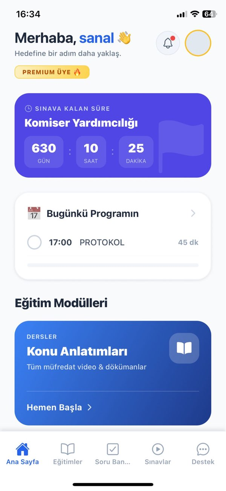
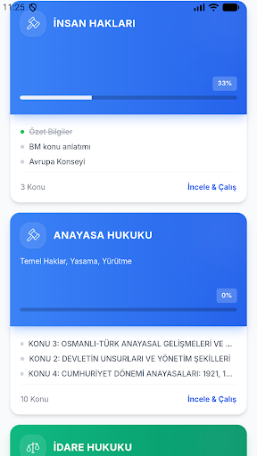
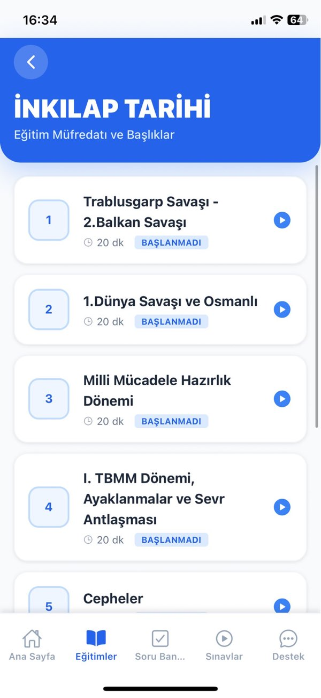
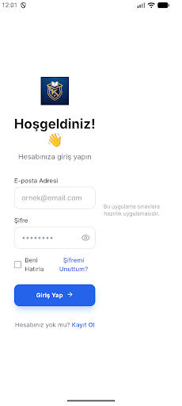
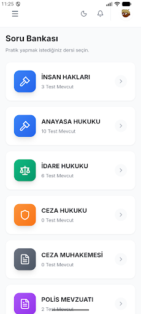

iOS ve Android'de yayında
App Store Puanı
4.3 / 5
Güncel Sürüm
1.8.2
Platform
iOS + Android
Komiserim Akademi Pro ile sınav hazırlığını mobil ve odaklı hale getir.
Komiser Yardımcılığı sınavı için geliştirilen Komiserim Akademi Pro; kapsamlı ders içerikleri, soru bankası, deneme sınavları, akıllı flashcard'lar ve performans takibini tek platformda birleştiriyor.
Bu sayfadaki ikonlar ve ekran görüntüleri resmi App Store ve Google Play listelemelerinden alınmıştır.


Uygulama
Komiserim Akademi Pro
Mağaza görünürlüğü
App Store + Google Play aktif
Hazırlık Akışı
Sınava giden yolu modüllere ayırır
Mağaza açıklamasında öne çıkan içerik modülleri, yoğun çalışma temposuna uyum sağlamak için bir arada kurgulanmış. Böylece konu öğrenme, pekiştirme ve deneme akışları aynı uygulamada buluşuyor.
Kapsamlı eğitimler
Sınavın tüm başlıklarını kapsayan ders içerikleri, mobil ortamda hızlı tekrar yapmayı kolaylaştırıyor.
Geniş soru bankası
Özgün sorularla konular pekiştiriliyor, soru çözme ritmi uygulama içinde korunuyor.
Gerçekçi denemeler
Deneme sınavları, eksikleri hızlı görmeye ve sınav formatına alışmaya yardımcı oluyor.
Akıllı flashcard'lar
Unutulması kolay bilgileri kısa oturumlarla tekrar etmek için pratik bir alan sunuyor.
Performans takibi
Ders bazında ilerleme görünürlüğü sağlayarak çalışmayı daha ölçülebilir hale getiriyor.
Liderlik motivasyonu
Rekabet duygusunu kullanarak çalışma temposunu yüksek tutmayı hedefleyen sosyal bir katman ekliyor.
Tek ekranda öğren, çöz, ölç
Komiserim Akademi Pro'nun ürün dili, dağınık kaynaklar arasında geçiş yapmadan mobil hazırlık sürecini sürdürebilmek üzerine kurulu. Mağaza metinleri bu yapıyı; içerik, soru, deneme ve analiz halkalarının birbirini beslediği bir hazırlık döngüsü olarak anlatıyor.
App Store tarafında 4.3 puanla listelenen uygulama, kısa aralıklarla performans iyileştirmeleri alan canlı bir ürün yapısına sahip. Aynı ürünün Google Play'de de yayınlanması çapraz platform erişimi güçlendiriyor.
Galeri
App Store ve Google Play görselleri
Aşağıdaki galeri, ürünün iki mağazadaki resmi görsel vitrininin bir araya getirilmiş halidir.



Hazırlık sürecini mobil olarak sürdürmek isteyenler için hazır
Komiserim Akademi Pro, çalışma oturumlarını gün içine dağıtmayı kolaylaştıran çapraz platform bir çözüm sunuyor. Uygulamayı App Store veya Google Play üzerinden inceleyebilir, güncel sürümü doğrudan mağazadan takip edebilirsiniz.